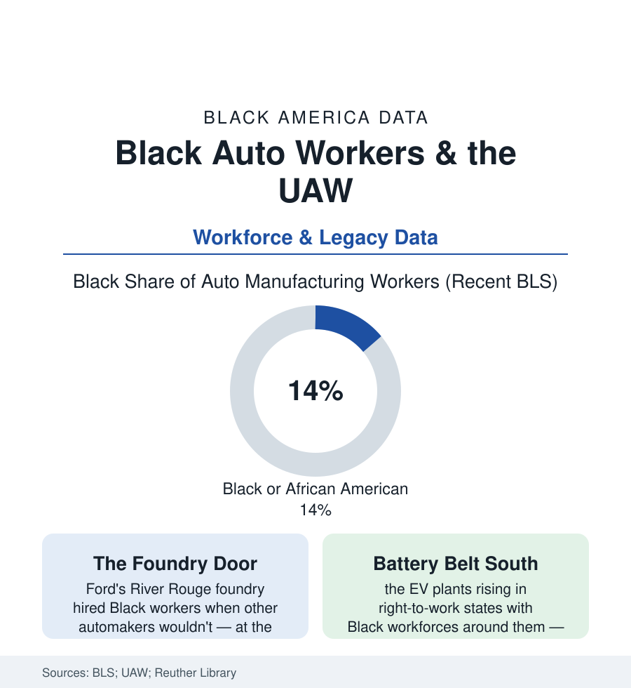

Black Employment
Black Auto Workers: The Line That Built the Middle Class
Auto work made more Black industrial fortunes than any other line — and its union was the movement's treasury and battleground. The UAW-era data and today's EV transition file.

If one industry's payroll explains the twentieth-century Black middle class, it is the automobile's: the assembly line and the foundry took the migrants of the cities section and paid them wages that bought the houses of the homeownership file, funded the churches and colleges of this atlas's institutions, and underwrote a freedom movement with union treasuries. Black workers are about fourteen percent of auto manufacturing employment in the recent BLS counts — but the industry's place in the Black economic record is larger than any share. This article reads the line's file: Ford's paradox, the union's long internal war, and the electric transition redrawing the map.
Ford's Paradox and the Plants' Geography
The industry's founding racial fact is a contradiction the data hold in one frame: Henry Ford's company hired Black workers in numbers when its competitors largely would not (the River Rouge complex employing some ten thousand Black workers at the era's peak counts — the largest industrial Black workforce in the North) — and slotted them overwhelmingly into the foundry and the paint and body shops, the plant's hottest, heaviest, most dangerous departments (the occupational data inside the Rouge a segregation map in miniature, its Black foremen nearly nonexistent across the era). The other majors' gates opened later and under pressure (GM's and Chrysler's wartime and postwar hiring in the federal-contract era), and the industry's geography concentrated the community's fate in the Detroit archipelago of the cities section — Hamtramck, River Rouge, Dearborn, Flint, Pontiac, Saginaw — with the parts-supplier tier (the foundries and stamping plants of the Midwest's second cities) spreading the payroll across the region. The wage itself is the file's engine: the UAW scale, postwar pattern bargaining, the pension and the retiree health benefit — the compensation stack that made the autoworker's household the Black industrial family's reference standard, the 'good job' of two generations' vocabulary, priced in every dataset this atlas carries on what the loss of it meant.
The Union's Internal War: DRUM to the Caucuses
The UAW was simultaneously the community's greatest institutional weapon and a structure it had to fight from inside: the record runs from the union's wartime fair-practices machinery and its civil-rights stands (the UAW's money and buses inside the movement's logistics in the archival record — the 1963 March's and Selma's ledgers) through the Black autoworkers' own insurgency — the Dodge Revolutionary Union Movement and the League of Revolutionary Black Workers of 1968-69 (the wildcat era's Black caucuses demanding the union confront the plants' internal color line: the foreman counts, the skilled-trades gates, the grievance disparities in the caucuses' own published data) — to the long institutional settlement (the skilled-trades consent structures, the Black vice presidents and regional directors climbing the union's own ladder across the following decades, the Trade Union Leadership Council of Detroit bridging the union and the community from 1957). The contraction era wrote the file's hardest data: the 1979-82 collapse and the buyout decades halving the Detroit archipelago's payrolls, the two-tier wage of the 2007 agreements (the new-hire tier's lower scale — the intergenerational transfer inside the union's own contract, its 2015-23 rounds partially unwinding it), and the supplier tier's Southern migration prefiguring the battery map.
The EV Transition: The New Plants on the Old Map
The industry's electric rebuild is siting itself, in the investment announcements' data, substantially in the non-union South — the battery and assembly plants of Tennessee, Kentucky, Georgia, and the Carolinas (the 'Battery Belt') rising in and beside majority-Black labor markets, their workforces in the hiring data already substantially Black, their union status the live question of the industry's next decade (the UAW's post-2023 organizing campaign — the Chattanooga Volkswagen vote of 2024, the union's first win at a foreign-owned Southern assembly plant in the modern record — as the campaign's first data point, the Mercedes Alabama vote its counterpoint). The incumbents' transition runs through the same file: the Detroit Three's EV retooling and the plant-allocation fights of the 2023 contracts (the strike's settlement data carrying explicit EV-plant commitments), the battery joint ventures' labor terms as the contracts' frontier, and the skills transition (the powertrain workforce's redeployment arithmetic in the labor studies). For the community whose industrial century the auto line defined, the stakes are the file's own: whether the new plants carry the old industry's wage-and-union standard into the Black South's labor markets, or the standard's absence.
Reading the Auto Data
Fourteen percent of the line, the foundry's paradox, a revolution caucused inside its own union, and a battery map being drawn over the migration's return route: the auto file is the employment section's complete American century in one industry — exclusion and engine at once, its ending not yet written. The workers who built the middle class on the line are watching their grandchildren's plants organize in Tennessee. The data will count how that goes.
More in Black Employment
The Black Unemployment Rate: The Two-to-One Pattern
Black unemployment runs at roughly twice the White rate — 5.5 percent against 3.3 percent in annual averages — a ratio stable across five decades of federal data. How it is measured and why it persists.
Black Median Weekly Earnings: The 80-Cent Ratio
Black full-time workers earn a median of about $900 a week — roughly 80 cents for every dollar White workers earn. The BLS earnings data by group, gender, and occupation.
Black Labor Force Participation: Working at National Rates
Black labor force participation runs at roughly the national rate — and Black women participate at higher rates than White women. The BLS participation data.
Source: U.S. Bureau of Labor Statistics; UAW records; Wayne State University Reuther Library labor archives; Bureau of Economic Analysis and industry reports.